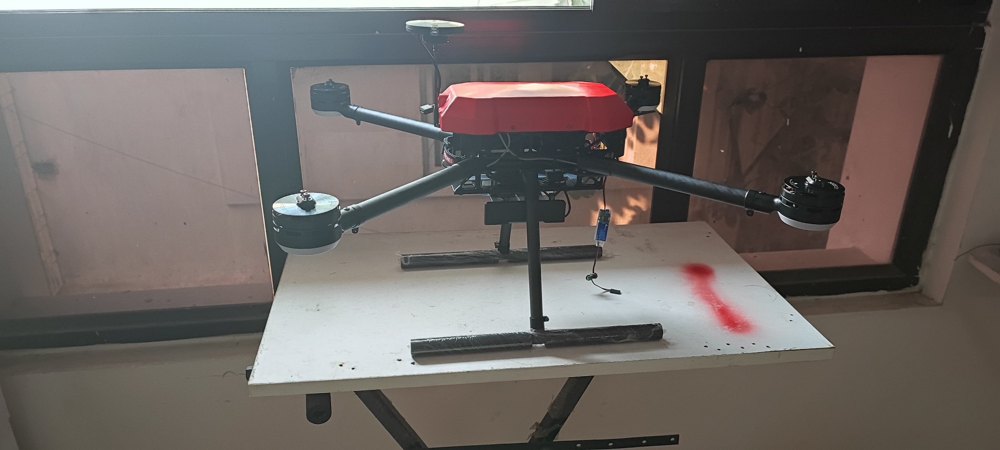
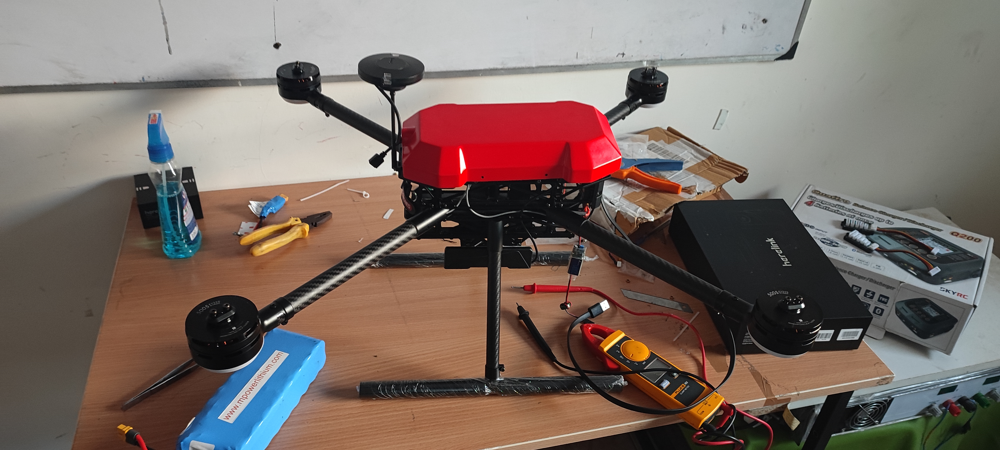
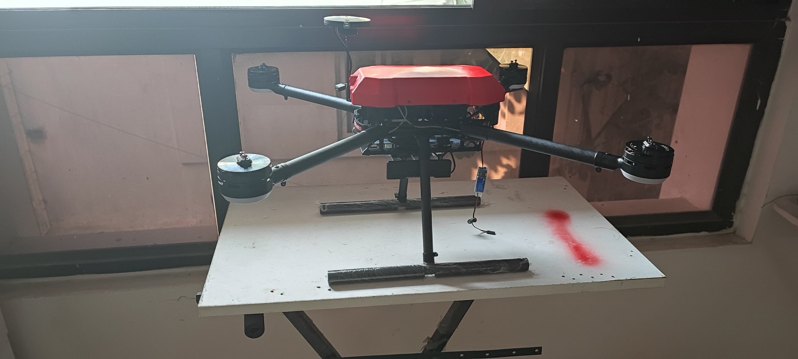
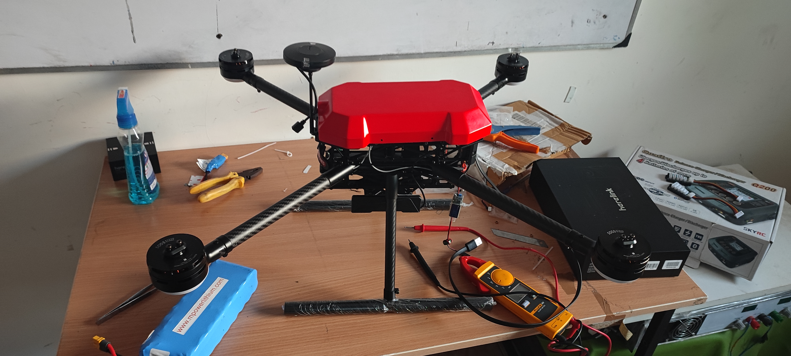
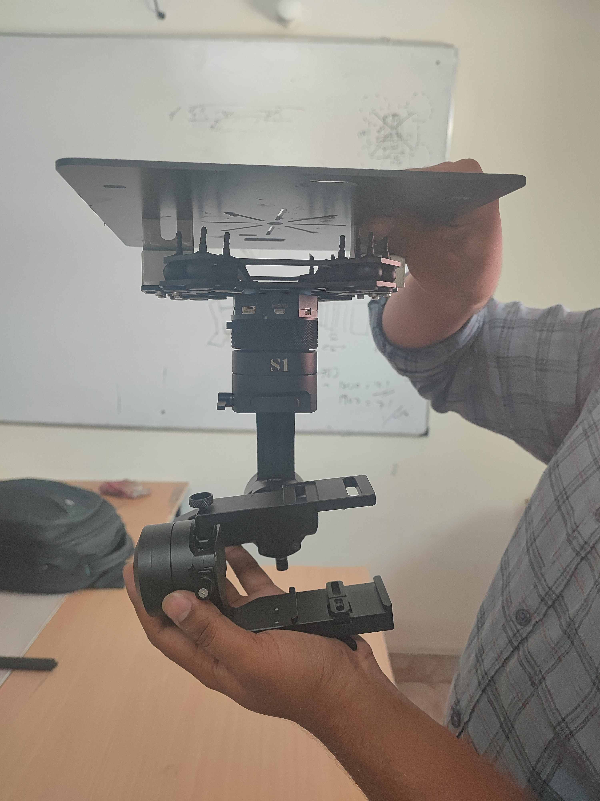
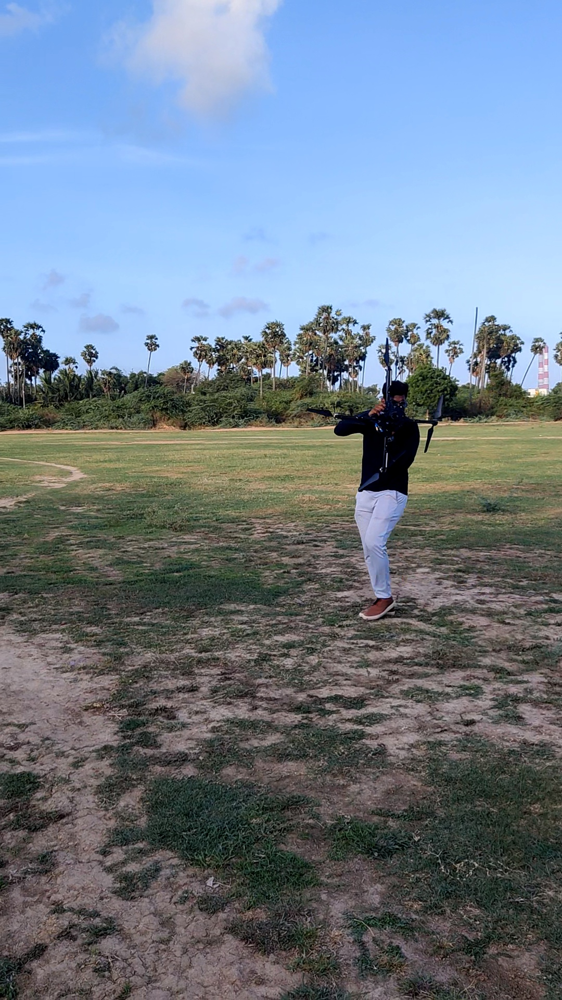
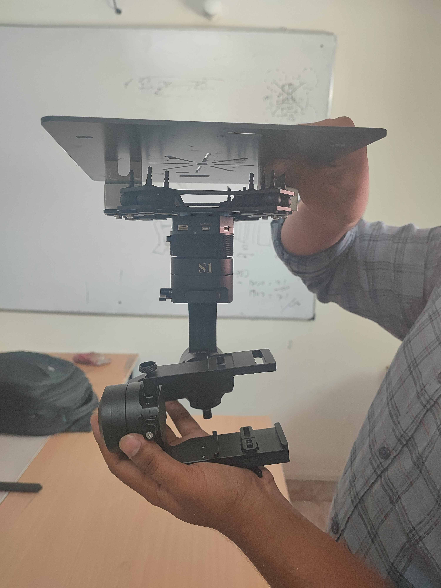
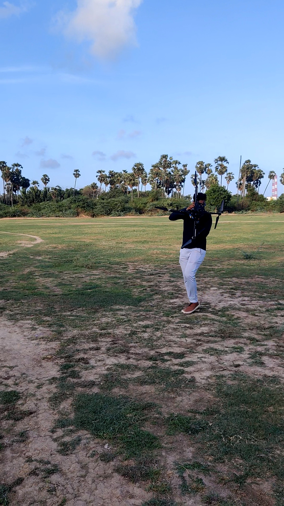

UAV for Autonomous Organ Transport
This project presents an autonomous Unmanned Aerial Vehicle (UAV) system designed specifically for the critical task of organ transport in emergency medical situations. The goal was to improve the reliability, speed, and safety of organ delivery across urban or inter-hospital environments where time is crucial. The UAV is equipped with high-precision RTK GPS and an Intel RealSense depth camera, enabling centimeter-level accurate navigation and dynamic obstacle avoidance. The flight controller is powered by PX4 firmware, allowing stable and mission-configurable autonomous flights. In addition to the hardware, a secure telemetry communication system was implemented to monitor live position, altitude, and system status from a ground control station.
- RTK GPS-enabled navigation for precise waypoint tracking
- Intel RealSense camera for real-time obstacle avoidance and visual SLAM
- PX4 + MAVLink integration for autonomous missions and custom flight modes
- Failsafe system for emergency landing in case of GPS loss or low battery
- Mission Planner used for route setup and real-time telemetry visualization
- Compact payload bay for storing sealed organ transport containers
Key Features
📍 Real-World Impact
This project was inspired by the growing need for efficient organ transport systems. Conventional methods such as ambulances are often delayed due to traffic congestion or geographic constraints. UAV-based systems offer a fast, safe, and contactless alternative, especially beneficial in crowded cities and during off-peak hospital hours.
Project Gallery
 





 


